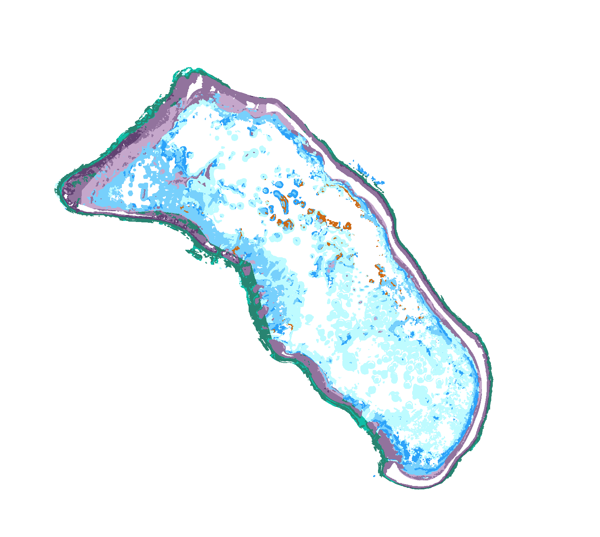
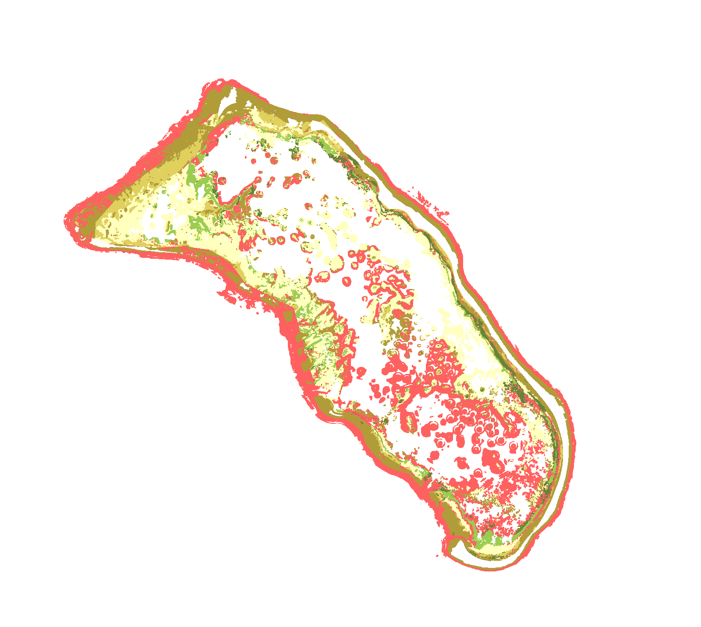

珊瑚礁裡，
都是珊瑚嗎？
正在建立海床…
概念礁區 · 非 Abaiang 實測地形
位於礁體的哪個部位？
礁坡向外海下降的區域
礁坪比較平坦的一帶
珊瑚
岩石
沙地
概念礁區示意 · 顏色標記只用來指引閱讀，沒有量測深度。
地貌：位於礁體的哪個部位？


地貌分類外礁坪
畫面為底質分類圖；兩個答案皆對應同一位置。
地貌：外礁坪
底質：岩石
Abaiang 環礁（吉里巴斯）· Allen Coral Atlas 公開圖資相同範圍與方向；空白為未分類區域，不代表沒有珊瑚。
把影像線索，接上環境與參考資料。
衛星影像顏色與紋理
推估水深與波浪環境條件
專家整理的參考類別參照現地資料、影像與既有知識
隨機森林先做分類
再依地貌規則與專家判讀，修訂成圖。
分工示意 · 參考標記不等於每個位置都曾現地量測。
如果礁脊，被標在礁坪中央……
初步分類：礁脊
周圍都是內礁坪，這一小塊的位置不符合礁脊應在邊緣的關係。
依論文規則設計的概念示意 · 非 Abaiang 的實際修改紀錄。
珊瑚與藻類，先合併成一類。
珊瑚／藻類
珊瑚／藻類在這類衛星影像中，兩者的訊號很相近。
觀察條件與分類關係的概念示意 · 不是這座環礁的白化或水質變化。
分類結果，和參考資料一致嗎？
| 地貌分類 | 69% |
|---|---|
| 底質分類 | 66% |
不同地區的表現仍有差異。
Lyons 等（2024）· 修訂後的最終地圖這兩個比例不是定位點的信心分數，也不是活珊瑚的覆蓋比例。
位於哪個部位？外礁坪
主要底質是什麼？岩石
分類描述環境，健康仍需另外調查。
畫面為底質分類圖 · Allen Coral Atlas 公開圖資岩石類別不表示完全沒有生物，也不能據此判斷珊瑚死亡。
逐幀檢視 · 24 fps
正在載入圖片與來源資料。